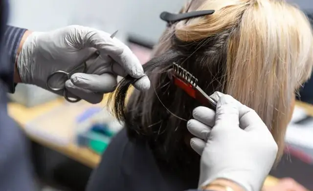

Testing services
Onsite drug and alcohol testing for workplaces across Horsham and the Wimmera, plus hair follicle testing for businesses and individuals.
Onsite and roadside testing
We bring testing to your worksite or roadside, so there is no need to send staff into town. Screening is designed to be efficient and to disrupt your day as little as possible, so workers can get back to the job quickly.
If a screening result needs confirming, samples can be sent for independent laboratory analysis. Management gets accurate results to base decisions on.
We can also help you put good testing practice in place, so your business stays safe, productive and compliant.
Oral fluid testing
The Accurate Oral Fluid 9-Panel test uses a simple saliva swab and screens for nine drug groups on the spot. It is quick, non-invasive and well suited to random and on-the-day workplace testing.
Urine testing
The Accurate One Step Urine Cup gives rapid on-site results across seven major drug groups. It was developed in response to growing concern about synthetic cannabis in the workplace, and also tests for:
- Synthetic cannabis
- Oxycodone
- Buprenorphine
- Methadone
- Fentanyl
- Tramadol
- Ketamine
Hair follicle testing
A hair sample shows drug and alcohol use over a longer period than oral fluid or urine. We collect hair samples for workplaces, and for individuals who need testing for legal aid or a court order.
| Code | Test |
|---|---|
| 654 | Standard Drug Test (SDT) |
| 109 | Benzodiazepines (standalone test) |
| 100 | Synthetic cannabinoids (standalone test) |
| 118 | Fentanyl (standalone test) |
| 920 | EtG alcohol |
| 782 | SDT panel (654) and benzodiazepines |
| 781 | SDT panel (654) and EtG alcohol |
| 863 | SDT, EtG alcohol and benzodiazepines |
The Standard Drug Test covers cocaine, opioids, PCP, amphetamines and cannabis (THC). Need something not listed? Ask us about other testing.

- info@wdatesting.com.au
- Hours
- Monday to Friday, 9 am to 5 pm